NT;RE HUD consistency, debug and measuring pass
HUD Glyph Measurements
Captured on Linux on 2026-11-09 at 1920 by 1080, on ntre_oilstain_ctg and ntre_yard_jgr with nine bots. The HUD is the one proposed in the HUD consistency pull requests, #28 to #32 on sunmachine/ntre-dev, with a debug view added on top. The before set has the debug view alone. The after set also has the icon fix described below. Neither addition is in a pull request yet.
What was found
Nineteen scenes were captured, each with a text dump of every rectangle the HUD drew in that frame. A script read each capture against its dump.
| Subject | Result | Detail |
|---|---|---|
| Fire mode icons | Cut, 3 glyphs | The automatic, semi-automatic and pump icons lose 3, 4 and 1 rows from their top at 1080p. The round drawn over the letter is 15 rows tall in the semi-automatic icon, so it shows 11. This is the cut reported from the earlier captures. |
| Cause | Measured | The engine draws nothing above a font's line box, and NOCR's line box stops below these three glyphs. Five test copies of NOCR, each with one metric changed, show which metric sets the box. |
| Fix | Built, open question | A font file with NOCR's icon glyphs and a taller line box removes the cut and keeps the icons' width to the pixel. It is an asset made from NOCR, so whether it may ship is an open question. |
| Other cut glyphs | None in use | Every font file the HUD loads was checked glyph by glyph. Only NOCR's h to m pass their line box among glyphs the HUD draws. Jura, Overpass Mono, Montserrat and the kill feed icon font are clean. |
| Text against its boxes | Nothing outside | No text run's ink leaves the box the game reported around it in any scene. The paddings are listed below, and a few are uneven by 2 px. |
| Ink where it was placed | Within 3 px | Every run drawn through the shared helpers has its ink within 3 px of the edges the code placed it by. Numbers differ by up to 3 px on purpose, since they are placed by the widest digit. |
| Coverage of the debug view | HUD yes, scoreboard no | All 74 text draws that bypassed the shared helpers now report to the view. The scoreboard draws through the menu toolkit in its own coordinates, so its text is dumped without a screen position. |
The cut, before and after
The measuring capture with the world blacked out, enlarged five times, with the dumped rectangles drawn on it. Red is the top of the font's line box, where the engine stops drawing. Before, the round sits flat against it. After, the line box starts above the glyph.
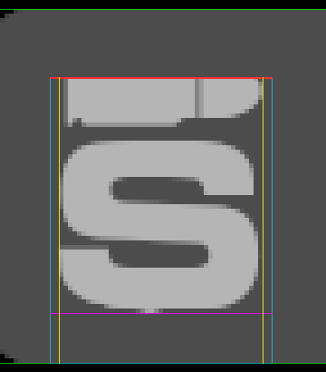
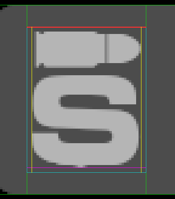
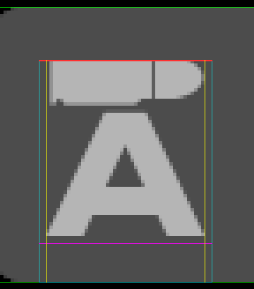
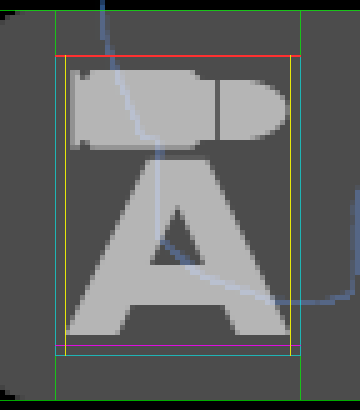
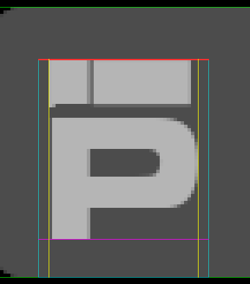
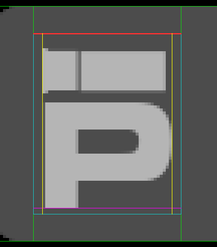
| Icon | Glyph | Outline top, font units | Line box, before | Ink rows, before | Line box, after | Ink rows, after | Ink columns |
|---|---|---|---|---|---|---|---|
| Semi-automatic | h | 1916 | y 1011..1074 | 1011..1062, 52 rows | y 1005..1065 | 1007..1062, 56 rows | 1479..1523 both |
| Automatic | j | 1864 | y 1011..1074 | 1011..1060, 50 rows | y 1005..1065 | 1008..1060, 53 rows | 1479..1523 both |
| Pump | l | 1805 | y 1011..1074 | 1011..1062, 52 rows | y 1005..1065 | 1010..1062, 53 rows | 1480..1522 both |
NOCR's win ascent is 1757 units. The panel runs from y 996 to 1074, so the whole semi-automatic icon stands 11 px from its top and 11 px from its bottom.
The same icon as text
The script prints any glyph's pixels as characters, so a cut can be read without opening an image. Left is before, right is after.
NHudFireMode 'h': line box y 1011..1074 1007 ::::::::::::::::::::::::::::::::::::::::::::::::::: 1008 ::::::::::::::::::::::::::::::::::::::::::::::::::: 1009 ::::::::::::::::::::::::::::::::::::::::::::::::::: 1010 ::::::::::::::::::::::::::::::::::::::::::::::::::: 1011 top ::::=############################+*###########*-::: 1012 ::::=############################+*############+::: 1013 ::::=############################+*############*::: 1014 ::::=############################+*############*::: 1015 ::::=############################+*############+::: 1016 ::::=############################+*###########*-::: 1017 ::::=############################+*##########*-:::: 1018 ::::=############################+*########*+-::::: 1019 ::::=############################+*#####*+=-::::::: 1020 ::::=#+-*####################*-:::::::::::::::::::: 1021 ::::-+-:=++++++++++++++++++++-::::::::::::::::::::: 1022 ::::::::::::::::::::::::::::::::::::::::::::::::::: 1023 ::::::::::::::::::::::::::::::::::::::::::::::::::: 1024 ::::::::::::::::::::::::::::::::::::::::::::::::::: 1025 :::::::::-=++******##############****++-::::::::::: 1026 :::::::=*###############################*+-:::::::: 1027 ::::::+###################################*=::::::: 1028 :::::+#####################################*-::::::
NHudFireMode 'h': line box y 1005..1065 1003 ::::::::::::::::::::::::::::::::::::::::::::::::::: 1004 ::::::::::::::::::::::::::::::::::::::::::::::::::: 1005 top ::::::::::::::::::::::::::::::::::::::::::::::::::: 1006 ::::::::::::::::::::::::::::::::::::::::::::::::::: 1007 ::::=*=-*###################*+-:::::::::::::::::::: 1008 ::::=############################+*#####*+=-::::::: 1009 ::::=############################+*########*+-::::: 1010 ::::=############################+*##########*-:::: 1011 ::::=############################+*###########*-::: 1012 ::::=############################+*############+::: 1013 ::::=############################+*############*::: 1014 ::::=############################+*############*::: 1015 ::::=############################+*############+::: 1016 ::::=############################+*###########*-::: 1017 ::::=############################+*##########*-:::: 1018 ::::=############################+*########*+-::::: 1019 ::::=############################+*#####*+=-::::::: 1020 ::::=#+-*####################*-:::::::::::::::::::: 1021 ::::-+-:=++++++++++++++++++++-::::::::::::::::::::: 1022 ::::::::::::::::::::::::::::::::::::::::::::::::::: 1023 ::::::::::::::::::::::::::::::::::::::::::::::::::: 1024 ::::::::::::::::::::::::::::::::::::::::::::::::::: 1025 :::::::::-=++******##############****++-::::::::::: 1026 :::::::=*###############################*+-::::::::
How the engine sizes a font
The working assumption was that the engine sizes a font so its win ascent plus win descent fills the requested height. The first fix was built on that and came out about 6% too large in game. So five copies of NOCR were made, each changing one thing, and drawn in one launch. The engine's own numbers for each are below.
| Font | What changed | Scheme font, height | Ascent the engine reports | Glyph advance | Reading |
|---|---|---|---|---|---|
| NOCR | Nothing. Win 1757 and 362, lowest glyph at -362. | 63 / 55 / 22 / 72 / 78 px | 52 / 46 / 18 / 60 / 65 | j 49, c 10, c 4, a 14, g 31 | The reference. |
| Copy A | Win ascent 1950, win descent 169. | 63 px | 53 | j 45 | The glyph shrank. The box is 1950 plus 362: the new ascent, and the old lowest glyph rather than the new win descent. |
| Copy B | hhea ascent and descent only. | 55 px | 46 | c 10 | No change. The hhea table is not read. |
| Copy C | Typo ascent and descent only. | 22 px | 18 | c 4 | No change. The typo metrics are not read. |
| Copy D | Only the icon glyphs kept, so the lowest glyph is at -53. No metric changed. | 72 px | 70 | a 16 | The glyph grew. The box is 1757 plus 53. |
| Copy E | Icon glyphs only, and win ascent 1950. | 78 px | 76 | g 33 | The box is 1950 plus 53. |
The rule on Linux: a font's line box runs from its OS/2 win ascent down to its lowest glyph. The font is sized so that box fills the requested height, and nothing is drawn above the box. For every font the HUD loads today the lowest glyph sits on the win descent, so that assumption gave the right sizes. It fails only for a font whose glyphs stop short of the win descent, which is what a font made of icons is. Windows is untested.
The shipped fix follows the rule. NOCR Icons has win ascent 1950 and win descent 53, a line box of 2003 units where NOCR's is 2119, and the scheme font's tall drops from 28 to 27 to make up the difference.
The debug view
cl_neo_hud_debug_draw 1 outlines every text run and every box the HUD draws. At 2 it also underlines each character's ink. cl_neo_hud_debug_dump label writes the same rectangles of one frame to hud_debug_label.txt in the game folder. Both are off by default and neither is a cheat.
- Font's line box
- Its top edge, where glyphs are cut
- Baseline
- Ink edges the text was placed by
- A box or a column
- One character's ink, at level 2
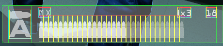
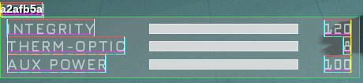
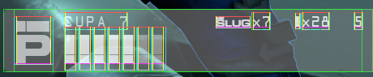
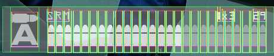
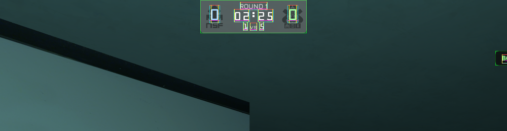
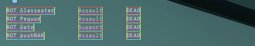
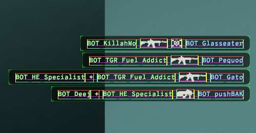
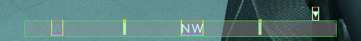
The dump
One line per box, text run and character, tab separated, in screen pixels. These are the ammo panel's first lines with the MILSO in hand, after the fix.
# screen 1920 1080 frame 208837 # kind element name scheme_font font_family tall ascent x0 y0 x1 y1 baseline ink_left ink_right text box NHudWeapon box - - 0 0 1464 996 1920 1074 0 0 0 box NHudWeapon icon column - - 0 0 1477 996 1526 1074 0 0 0 box NHudWeapon text column - - 0 0 1540 996 1907 1074 0 0 0 text NHudWeapon - NHudFireMode NOCR Icons 60 58 1477 1005 1526 1065 1063 1479 1524 h text NHudWeapon - NHudAmmoCount NOCR 22 18 1884 1000 1908 1022 1018 1885 1907 11 text NHudWeapon - NHudPanelText NOCR 22 18 1831 1000 1855 1022 1018 1833 1854 x3 text NHudWeapon - NHudReserveB NOCR 24 20 1825 998 1830 1022 1018 1825 1830 b
The report
hud_debug_report.py reads a dump and the capture of the same frame. It finds the ink inside each character's columns, compares it with the font's outline, and flags a cut, ink outside its box, or ink away from where it was placed. This is its whole output for the MILSO's ammo panel before the fix.
17 text runs, 1 flagged, 1 boxes
== NHudWeapon
NHudFireMode (NOCR 63 px) "h"
line box x 1477..1526 y 1011..1074, baseline 1063; ink x 1479..1523 y 1011..1062
in box [1464, 996, 1920, 1074]: left 15, top 15, right 396, bottom 11 px to its edges
FLAGS CUT_TOP
- 'h' outline reaches 4.9 px above its line box, and the capture's ink stops flat on that edgeAfter the fix every scene reports no cut. Two kill feed runs per scene are still flagged: the assist separator is drawn as a plus sign with a space on each side, and the view counts the spaces as ink it was placed by. That is the tool's error, not the feed's.
Text and its boxes
With --layout the report gives each box's padding to the nearest ink and the rows inside it. These are from the after set. Nothing here is flagged. The uneven pairs are listed so they can be ruled intended or not.
| Box | Size | Left | Top | Right | Bottom | Note |
|---|---|---|---|---|---|---|
| Vitals | 456 by 78 | 9 | 9 | 11 | 11 | Baselines at y 1018, 1040 and 1063. The top and left paddings are 2 px smaller than the bottom and right. |
| Ammo, text column | 367 by 78 | 0 | 9 | 0 | 11 | Name, counts and rail fill the column edge to edge. Baselines at y 1018 and 1063 match the vitals' first and third rows. |
| Ammo, whole panel | 456 by 78 | 15 | 9 | 13 | 11 | The count ends 13 px from the screen edge. The vitals' text starts 9 px from theirs. |
| Ammo, icon column | 49 by 78 | 2 | 11 to 14 | 2 | 11 to 13 | Fire mode icons. Frag 12 and 13, smoke 15 and 16, knife 31 and 30. |
| Dash | 210 by 66 | 21 | 8 | 20 | 8 | Round text ends at y 16, the clock runs 24 to 39, the alive counts start at 47: 7 px between rows, as designed. |
| Kill feed row | 29 tall | 13 to 14 | 5 to 7 | 13 to 14 | 5 to 8 | Names stand on a baseline 2 px above the icons' baseline. |
| Compass | 450 by 24 | n/a | 3 and 5 | n/a | 4 and 6 | Separators, then letters. |
Against earlier feedback
Each row is something decided or noted earlier in this work, set beside what the measurements say.
| Recorded earlier | Measured now | Standing |
|---|---|---|
| Earlier note: the fire mode icons are clipped by about 4 px, and a fix needs an icon font with a taller ascent or new images. | 4, 3 and 1 rows. The icon font is built and measured in game. | Open question |
| Earlier note: the engine sizes a font so its win ascent plus descent fills the height. | Win ascent plus the lowest glyph. Same result for every font in use, different for an icon font. | Corrected |
Earlier decision: NHudFireMode drops from 32 because the glyphs pass the top padding and the 49.5 px icon column. | At 28 the ink is 45 px in a 49 px column, 2 px a side. With the icon font the same width comes from tall 27. | Holds |
| Review finding: the helpers measured by advance but placed by ink, so gaps were off by the side bearings. | Every helper-drawn run has its ink within 3 px of where it was placed, numbers included. | Holds |
| Ammo panel: its baselines match the first and third rows of the vitals. | y 1018 and 1063 in both panels. | Holds |
| Earlier decision: even gaps of about 7 px between the dash's rows. | 7 px and 7 px, with 8 px above and below. | Holds |
| Earlier note: the weapon name falls back to the small label font when it nears the counts, which only the SUPA7 does. | The SUPA 7's name is drawn in the full size font, 110 px clear of the slug count. Its shorter hudname made the fallback unused by any weapon in the set. | The note was stale |
| Not tested: resolutions other than 1080p, Windows, deathmatch, ghost capture sentences. | Unchanged. The line box rule above is Linux only until someone runs the dump on Windows. | Open |
What this changes for the pull requests
These are proposals for the pull request series, and none is settled.
- A measuring step before each pull request goes up. Capture the set with dumps, run the report, and require no cut and no ink outside its box. A new font file goes through the glyph audit first. The layout table goes in the pull request's testing notes.
- The debug view becomes its own pull request. It is three commits. The first needs only the text foundation, so it can sit right after #28. The second touches every panel's direct text draws and will conflict with the four branches after it, so the recommendation is that each of those adopts the two wrapper calls in the lines it already rewrites, with one sweep at the end for the panels nobody touched.
- The icon fix belongs in the ammo panel pull request, #29, once the font file is in the assets pull request beside Jura and Overpass Mono.
- Icons want one way in. The ammo panel places its icons with two hand-measured offsets and one rule of thumb. A table of each icon glyph's ink, made from the font file by a script, would let one helper center any icon and assert that it fits its line box. This is a proposal and nothing is built.
Open questions
- The icon font: ship
nocr_icons.ttfmade from NOCR, redraw the three icons into the team's own icon font, or leave the cut. NOCR's file names no license. - Where the debug view sits in the stack, and whether
cl_neo_hud_debug_drawshould be a cheat after all. - Whether the 9 and 11 px paddings in the bottom panels, and the 13 px on the ammo panel's right, are intended.
Ammo panel
Bottom right corner at native pixels, after the fix.
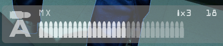
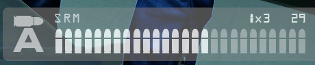
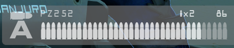
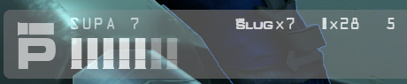
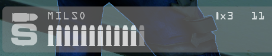
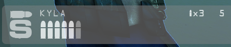
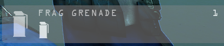
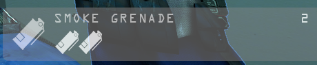
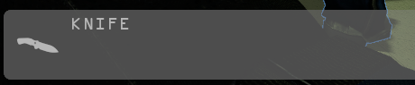
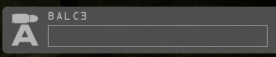
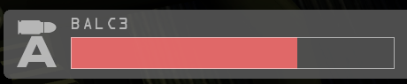
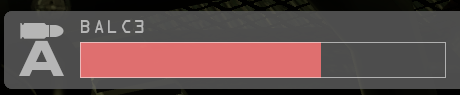
Before the fix, for comparison
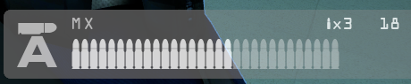
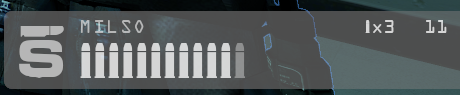
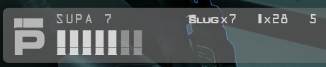
Vitals
Bottom left corner. Jura labels and NOCR numbers on the bars' baselines.
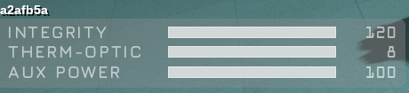
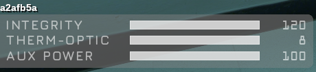
Compass
Bottom center. Directions in Jura, the objective arrow above the box.
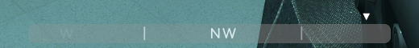
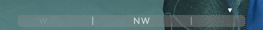
Dash
Top center. Bold clock and alive counts, even rows, avatars with cut names, squad list in Overpass Mono.
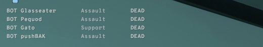
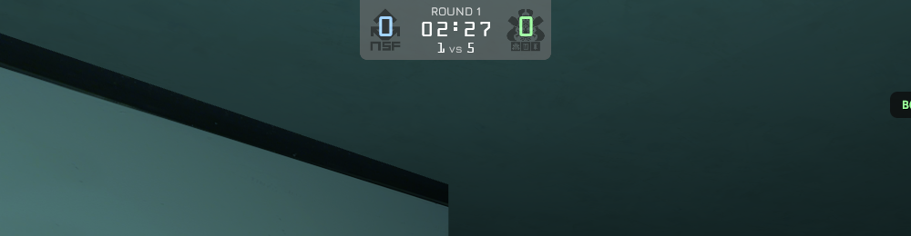
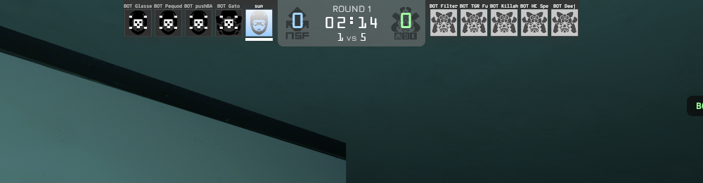
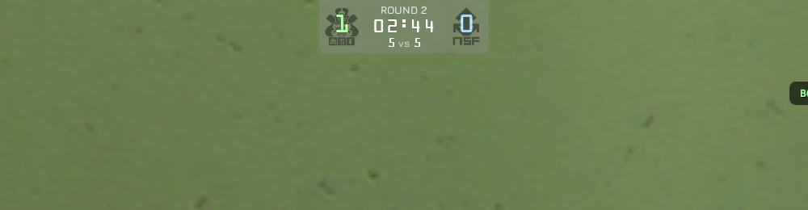
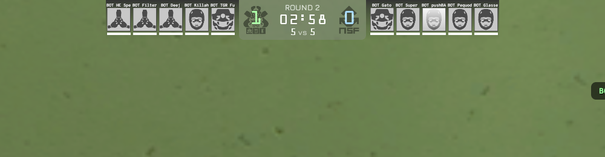
Kill feed
Top right. Names in Overpass Mono, words in Montserrat, the feed starting below the avatars only when they drew this frame.
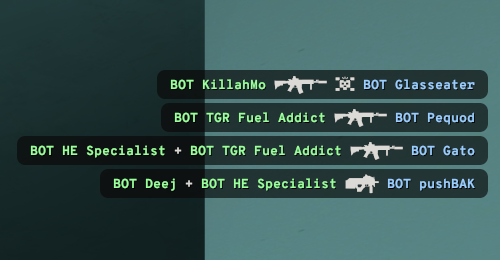
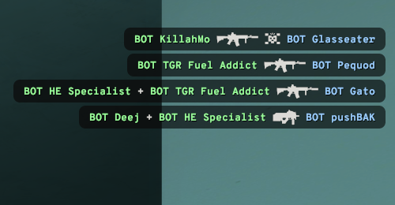
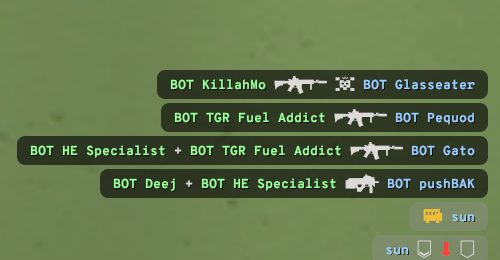
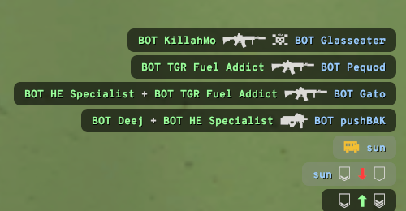
Every scene
Scaled to 1280 wide, from the after set. The switch shows each scene with the debug view on. Click a scene to see it larger.
Still to look at
- The ghost in hand. The give command did not make it the active weapon in these runs, so there is no ghost scene. It draws the same kill feed icon the knife does.
- The BALC heat bar part way up. Both firing frames came out overheated.
- The scoreboard in the debug view. Its text needs a screen position before the report can measure it.
- Windows, where the engine draws fonts through a different system and the line box rule may differ.
- Resolutions other than 1920 by 1080, deathmatch, and kill feed sentences such as a ghost capture.